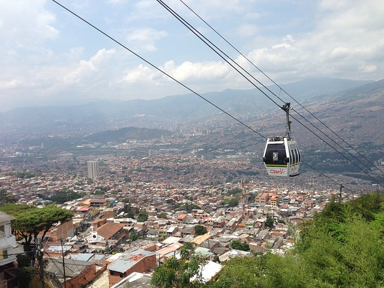
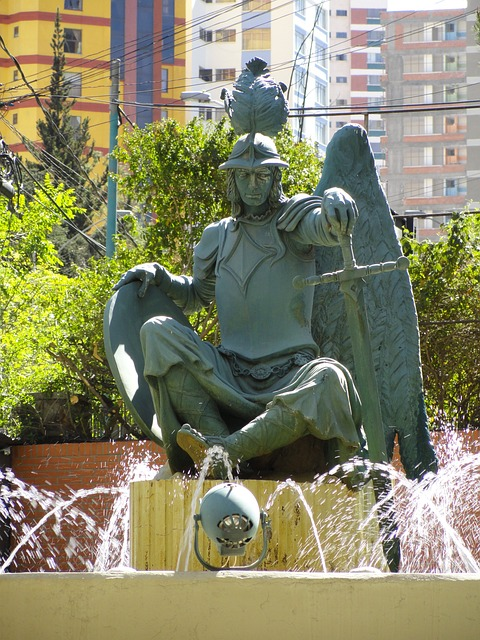
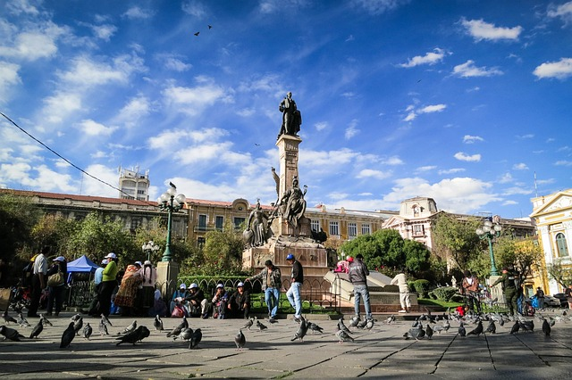
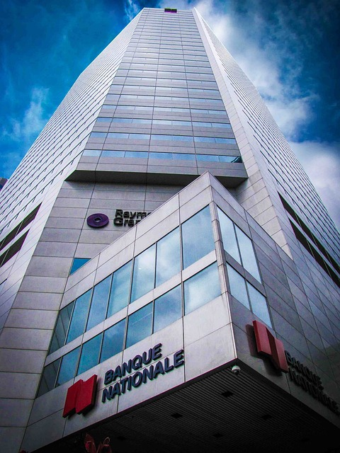
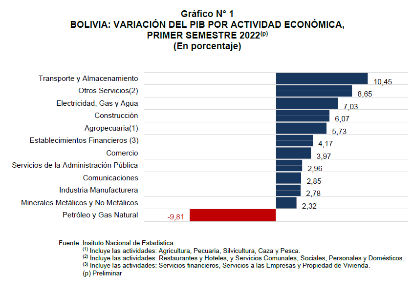
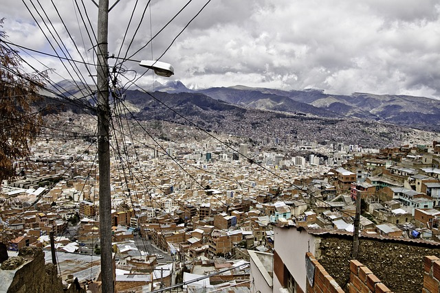

Discover more of Bolivia!
The cable car that will connect the two main cities of Bolivia is the highest in the world, at 4,000m above sea level, and at the same time the longest, with an extension of approximately 11km. The system comprises three lines: green, yellow and red, and consists of 11 stations. Its transport capacity reaches 18,000 passengers per hour with a total of 443 cabins.
Monument that is located at an intersection of two very busy streets in the center of La Paz. You can perhaps pass by and not pay much attention to it (it happened to me). It has a commemorative plaque and it is there when you read it that you realize what it is and stop to admire it. A monument that symbolizes the heroes of the wars fought in that nation
Plaza Murillo and its surroundings is something you cannot miss if you come to La Paz. Located in the heart of the city, around it you have several emblematic buildings. The Government Palace (or Palacio Quemado) with its soldiers at the entrance standing guard, next to it we have the Metropolitan Cathedral and diagonal to it is the Legislative Palace. The plaza has two monuments, one in the center of the plaza of Murillo and a bust on one side of a former president that was hung on a post in the plaza, according to what a local person commented.
The Central Bank of Bolivia is a public law institution, with legal personality and its own assets. Within the framework of the economic policy of the State, it is the function of the Central Bank of Bolivia to maintain the stability of the internal purchasing power of the currency, to contribute to economic and social development.
An economic growth of 4.86% in the Gross Domestic Product (GDP) and inflation of 3.28% for Bolivia this 2023 is projected in the Fiscal-Financial Program 2023, signed between the Ministry of Economy and Public Finance and the Bank Central Bolivia (BCB).
According to the last National Population and Housing Census (2012), Bolivia has approximately 10 million people. Of these, 26.7% are concentrated in the Department of La Paz and 17.7% in the Metropolitan Region of the Department of La Paz. Thus, this region is becoming increasingly important with respect to the total population of the Department of La Paz, coming to reside in 5.4% of its surface, 66.2% of its population.